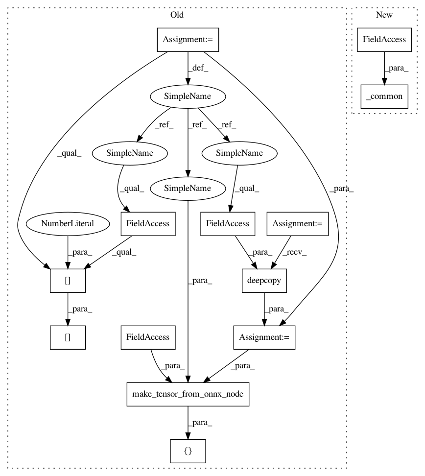

c087a452bb944e2dea0a87f78476664f473f0bac,onnx_tf/handlers/backend/space_to_depth.py,SpaceToDepth,version_1,#Any#Any#,20
Before Change
@classmethod
def version_1(cls, node, **kwargs):
x = kwargs["tensor_dict"][node.inputs[0]]
x_rank = len(x.get_shape())
storage_format, compute_format = get_data_format(x_rank)
attrs = copy.deepcopy(node.attrs)
attrs["data_format"] = storage_format
return [
cls.make_tensor_from_onnx_node(
node, attrs=attrs, c_first_cuda_only=True, **kwargs)
]
After Change
@classmethod
def version_1(cls, node, **kwargs):
return cls._common(node, **kwargs)
@classmethod
def version_13(cls, node, **kwargs):
return cls._common(node, **kwargs)
In pattern: SUPERPATTERN
Frequency: 3
Non-data size: 13
Instances
Project Name: onnx/onnx-tensorflow
Commit Name: c087a452bb944e2dea0a87f78476664f473f0bac
Time: 2021-01-13
Author: wtsang@us.ibm.com
File Name: onnx_tf/handlers/backend/space_to_depth.py
Class Name: SpaceToDepth
Method Name: version_1
Project Name: onnx/onnx-tensorflow
Commit Name: 1a433b9140cc4824ec50f13e3295a5cfcf046c27
Time: 2021-01-13
Author: chhuang@us.ibm.com
File Name: onnx_tf/handlers/backend/gather.py
Class Name: Gather
Method Name: version_11
Project Name: onnx/onnx-tensorflow
Commit Name: adc869e88b109af683ac94251165f96f7a406bba
Time: 2019-10-04
Author: wtsang@us.ibm.com
File Name: onnx_tf/handlers/backend/onehot.py
Class Name: OneHot
Method Name: version_9